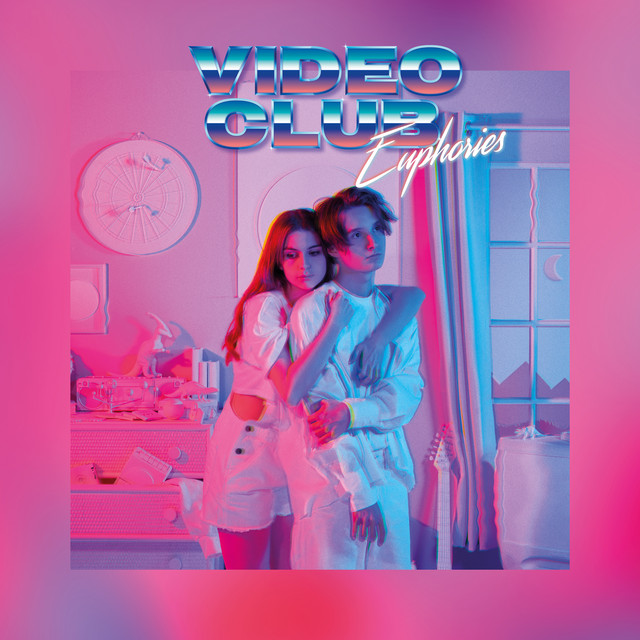

"There is nothing we can do"
"Amour Plastique"
par Vidéoclub
La chanson, de la poésie ?
La naissance de Vidéoclub
Adèle Castillon
Née en 2001 • YouTube à 13 ans
Actrice en 2017 • "Sous le même toit"
Matthieu Reynaud
Né en 2001 • fils de guitariste pro
Inspiré années 70-80 • acoustique → electro
Sujet écrivant
Leur propre histoire, rien de fictif
Rapport au monde
Intimité, mais titre critique et universel
Pratique du langage
Synthwave 80's, sensibilité contemporaine
Rencontre à Nantes, 2018 • "Amour Plastique" enregistrée dans le salon familial • Séparation en 2021
Synthwave et electropop française
Synthétiseurs analogiques • Boîtes à rythmes • Reverb • Esthétique VHS
Production maison : son intimiste et vulnérable
Écoutez attentivement, repérez ce qui vous frappe dans le texte.

Thèmes et titre
Champs lexicaux
Eau & mouvement
noie, vague, abîme, limbes, avalanche, coule
Obscurité
sombre, nuit, ombre, démons, abîme
Corps
peau, coeur, joues, poitrine, corps
"je" dominant • "tu" intime • "nos" fusion
Analyse du titre
Plan phonique
"Amour" : nasale [m], voyelle ouverte, doux
"Plastique" : P explosif, finale abrupte, dur
→ Contraste sonore, tension
Plan sémantique
Plastique = artificiel, façonné, société de consommation
→ Amour de surface, critique discrète
Champ phonique
| Élément | Exemple | Effet |
|---|---|---|
| Rimes alternées | divague / yeux / vague / amoureux | Écho sémantique, musicalité |
| Paronomase | "divague" / "vague" | L'esprit divague comme une vague |
| Assonances en [u] | noie, joues, nous, sombre | Profondeur, engloutissement |
| Assonances en [a] | divague, vague, âme, avalanche | Ampleur, ouverture sans fond |
| Allitérations en [s] | sombre, souffle, sombrent, sans fond | Glissement, dérobement |
| Rythme long et fluide | Ensemble des vers | Sensation de vague, flottement |
Les sons portent le sens. C'est la force du poème.
Champ morpho-syntaxique
| Figure | Extrait | Effet |
|---|---|---|
| Inversion | "Dans mon esprit tout divague" | Espace intérieur avant l'action |
| Parallélisme | "Je me perds... / Je me noie..." | Vertige par accumulation |
| Anaphore | "Je me...", "Je ne...", "Je résonne..." | Enfermement dans le "je" |
| Gradation | "je pleure des larmes qui coulent..." | Amplification de la douleur |
| Anaphore structurelle | Refrain = reprise du 1er couplet | Répétition compulsive, obsession |
| Double parallélisme | "Qui es-tu ? Où es-tu ?" | Vide, quête sans réponse |
On est piégé dans le texte comme le personnage dans ses émotions.
Champ sémantique
| Figure | Passage | Sens et effet |
|---|---|---|
| Métaphore | "la vague de ton regard amoureux" | Regard = force irrésistible |
| Métaphore | "l'avalanche de mon coeur égaré" | Excès d'émotion incontrôlable |
| Métaphore filée | vague, noie, abîme, limbes, coule | Amour = naufrage progressif |
| Hyperbole | "Aime-moi jusqu'à ce que les roses fanent" | Amour au-delà de l'éternité |
| Personnification | "mes tristes démons" | Émotions = êtres vivants |
| Synesthésie | "Je résonne en baisers" | Son → toucher, immersion totale |
| Allusion | "dans ton coeur Roméo" | Tragédie amoureuse classique |
| Oxymore implicite | "Amour Plastique" | Noble + artificiel = tension |
12 figures repérées : densité poétique confirmée.
Structure circulaire
Immersion amoureuse
Nuit, douleur, démons
"Qui es-tu ? Où es-tu ?"
Ombre, doute
Retour exact
Structure circulaire = enfermement, obsession
On revient au point de départ sans avoir avancé.
Quiz
Au-delà du sentiment
Vagues sonores, engloutissement
Boucles, enfermement
et critique de l'artificiel
Naufrage, tragédie, artifice
Tout converge : obsession, impossibilité d'échapper.
Pourquoi cette chanson ?
Pourquoi ce choix ?
Histoire vraie, émotions sincères, texte qui mérite d'être lu.
En quoi est-ce un poème ?
Figures nombreuses, sons = sens, structure porteuse.
"Une chanson que beaucoup connaissent cache autant de profondeur."
Notre image originale

Collage numérique, esthétique synthwave, palette néon
Alors, une chanson peut-elle être un poème ?
OUI.
Elle mérite d'être lue, analysée et défendue.
Merci pour votre attention.
Des questions ?